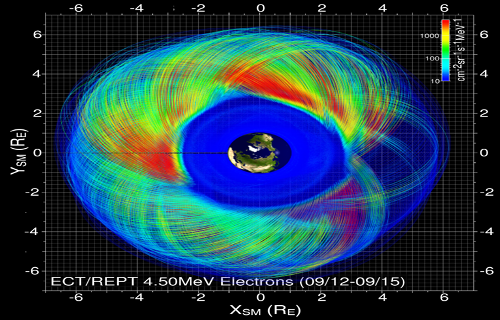
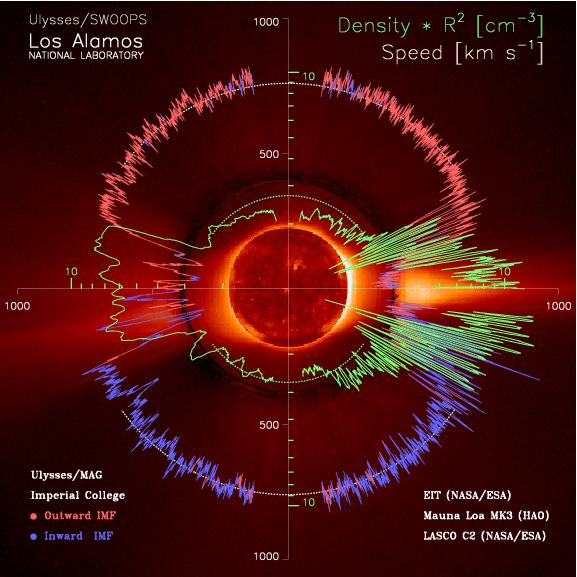
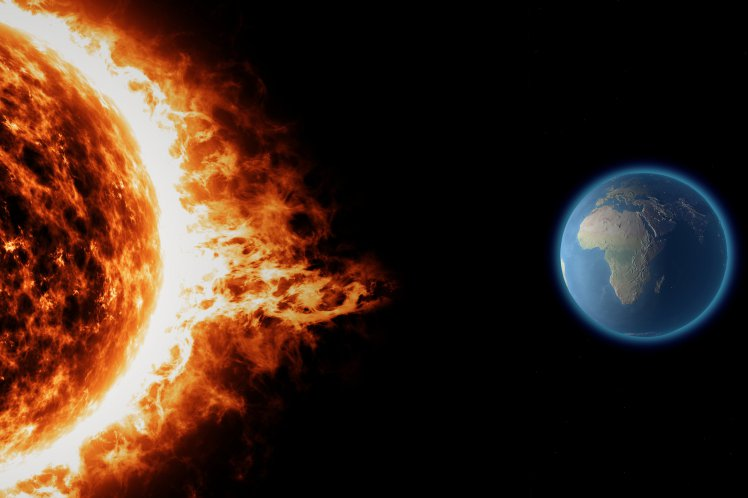
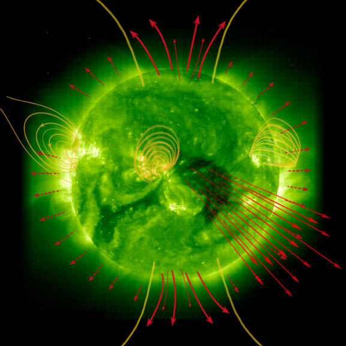

Machine Learning for Space Weather
Projects
Forecast of ground magnetic perturbations (dB/dt)
Combination of Machine Learning and physics-based simulation to forecast the perturbation of the magnetic field on the ground, that is responsible for geomagnetic induced current (GIC). GIC can damage electrical power systems and transformers and lead to regional black-outs. The project uses historical ground-based magnetometer data and the output of the Geospace model that is operational at NOAA/SWPC.
Real-time forecasting of killer electrons on satellite orbits
 5-years project funded as a personal fellowship through a NWO-VIDI grant. In this project we will Bayesian parameter estimation and Physics-Informed Machine Learning to enhance physics-based simulations of high-energy electron flux in the radiation belt. The goal is to be able to predict the fluxes of killer electron along a given satellite orbit.
Artificial Intelligence Data Analysis (AIDA)
AIDA (Artificial Intelligence Data Analysis) is a scientific project coordinated by Prof. Giovanni Lapenta at KU Leuven and funded by the European Community, as part of the Horizon 2020 program (COMPET-4). AIDA has a total cost of 1.5 million euro and involves researchers from universities and companies in 6 countries: Belgium, Netherlands, France, Italy, Greece and the USA. This interdisciplinary collaboration will be devoted to artificial intelligence, applied to the analysis of space data.
Solar Wind Classification
 Classifying the solar wind in different 'types' is important to improve our statistical studies of solar wind properties. We are studying the classification of solar wind types with respect to their solar origin, by using Gaussian Processes. We have classsified about 300,000 hours of solar wind data taken form the OMNI2 database. The paper is avaialable here The data and software is freely available here.
Forecast of geomagnetic indexes
 We are working on forecast algorithms to predict the Dst geomagnetic index, based on solar wind velocity and magnetic field measured at the L1 point. The latest method employs a combination of Gaussian Processes and Long Short-Term Memory Neural Network. It outputs a distribution probability of future Dst values, up to 6 hours ahead.
Forecast of solar wind speed
 We are developing algorithms that forecast the speed of the solar wind, a few days ahead of the arrival time, combining physics-based inputs and data-driven models. The latest model is a probabilistic model that predicts the 'what and when'. See a poster of this work here
CWI-INRIA project 'Data-enhanced simulations for Space Weather predictions'
 A project jointly funded by CWI and INRIA, through an international associate team. We propose an innovative approach to Space Weather modeling: the synergetic use of state-of-the-art simulations with Machine Learning and Data Assimilation techniques, in order to adjust for errors due to non-modeled physical processes, and parameter uncertainties.
Back to the top
A project jointly funded by CWI and INRIA, through an international associate team. We propose an innovative approach to Space Weather modeling: the synergetic use of state-of-the-art simulations with Machine Learning and Data Assimilation techniques, in order to adjust for errors due to non-modeled physical processes, and parameter uncertainties.
Back to the top
Real-time forecasting of killer electrons on satellite orbits (VIDI grant)
In this project we will use Bayesian parameter estimation to enhance physics-based simulations of high-energy electron flux in the radiation belt. The goal is to be able to predict the fluxes of killer electron along a given satellite orbit.
Solar Wind Classification
We are studying the classification of solar wind types with respect to their solar origin, by using Gaussian Processes. We have classsified about 300,000 hours of solar wind data taken form the OMNI2 database
One-hour ahead DST forecast
We have devised a forecast algorithm to predict the Dst geomagnetic index, based on solar wind velocity and magnetic field measured at the L1 point. The method employs Gaussian Processes and hence it outputs a distribution probability of future Dst values.Information theory for solar wind-magnetosphere coupling
We are employing information theory tools to understand the physical coupling between solar wind and magnetosphere. This will help establish the relative importance of exogenous parameters, such as solar wind velocity, flux and interplanetary magnetic field, in predicting local flux enhancement or geomagnetic storm commencement in the radiation belts.
Uncertainty propagation in radiation belt quasi-linear simulations
We are investigating how uncertainties on the definition of diffusion coefficients and boundary conditions affect the results of numerical simulations, in the standard quasi-linear framework. In particular, we intend to use a Bayesian approach, where the outcome of a simulation will be interpreted within a given confidence interval, as a posterior probability.
SpaceWeather.wiki
We are building an open platform where Space Weather modelers can share and compare their models.Our intent is to help the Space Weather community by making this website wiki-styled, non-commercial, and academic oriented. If you are interested in testing, comparing, and ultimately sharing your prediction model, that is the right venue for you!